Photos originales encore à intégrer. Les fichiers des nouvelles images ne sont pas accessibles au téléchargement dans cet environnement. PRIME conserve ses deux photos existantes; Hardie conserve son visuel de gamme. La fiche MAC indique la boîte de 500; sa photo et la longueur exacte restent à confirmer.
Captures réelles du navigateur. Le magasin présenté est une revue locale avec panier d’essai. Aucun compte employé, stock réel ou catalogue de production n’a été modifié.
12 vues PC et téléphone
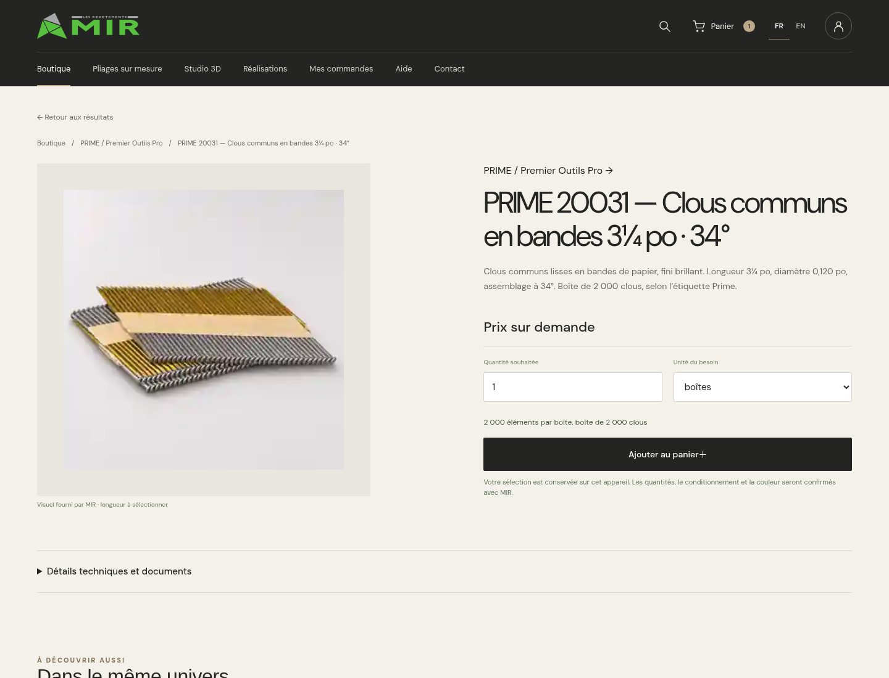
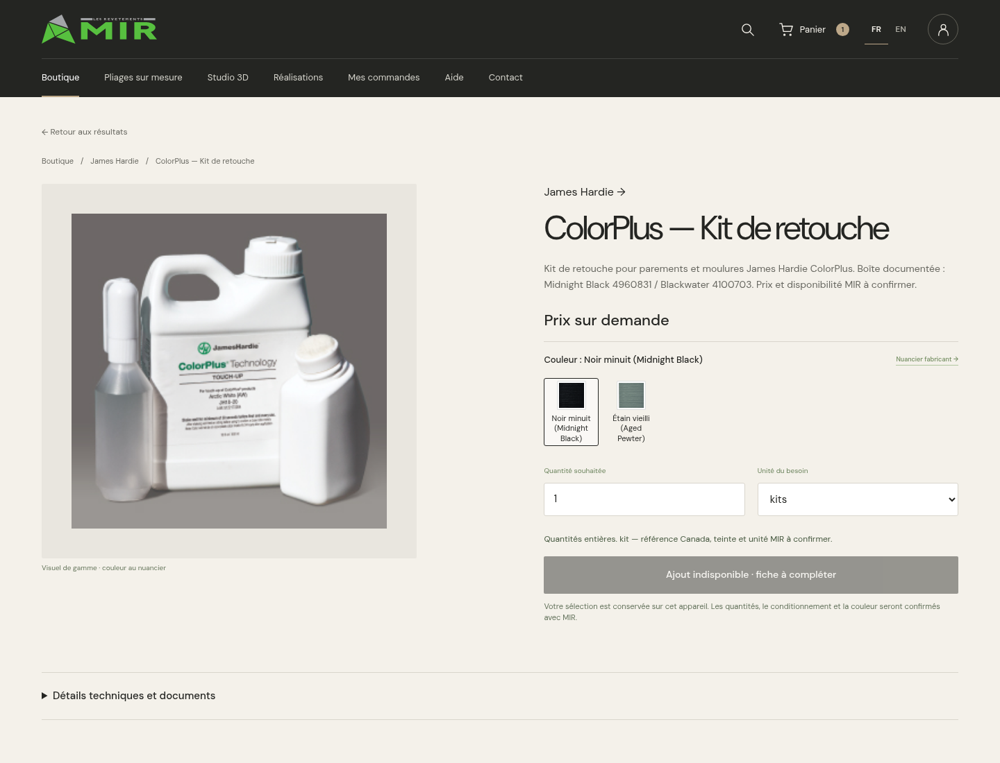
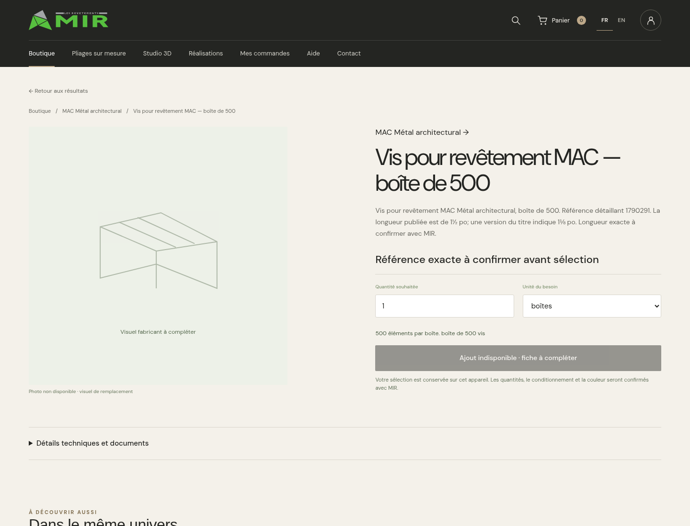
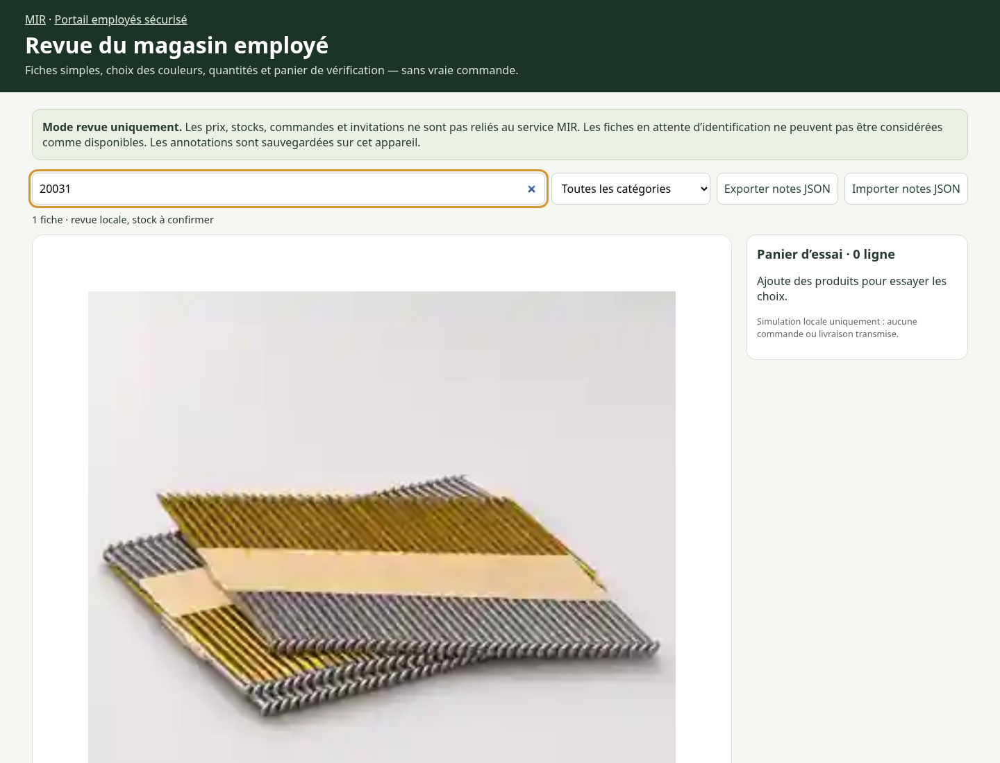
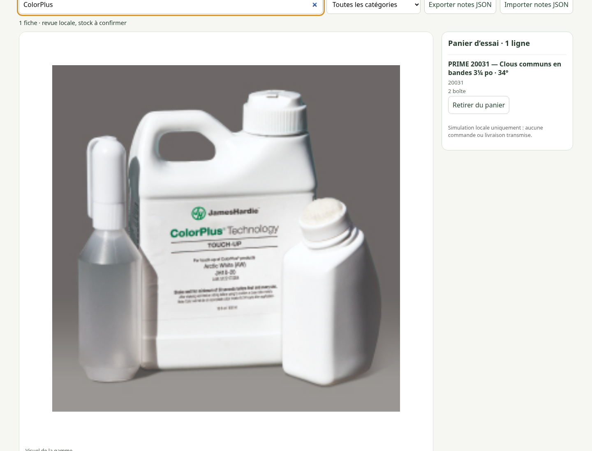
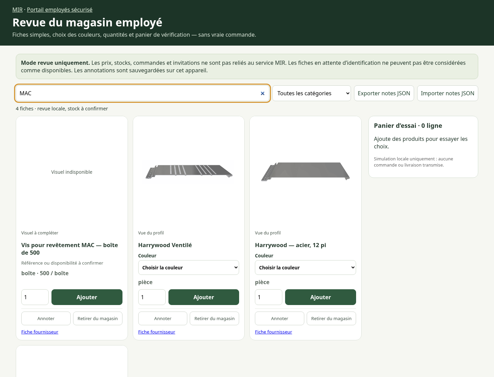
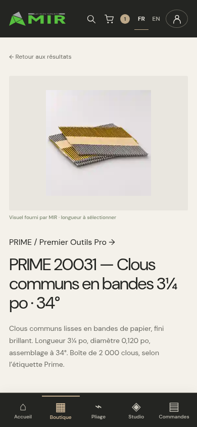
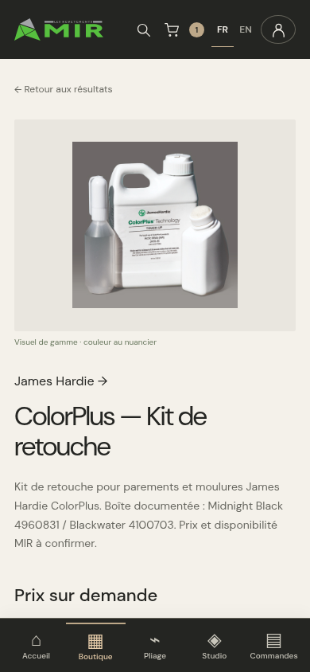
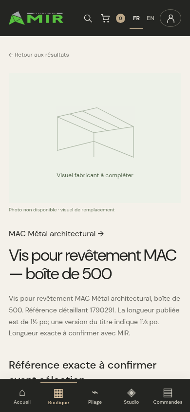
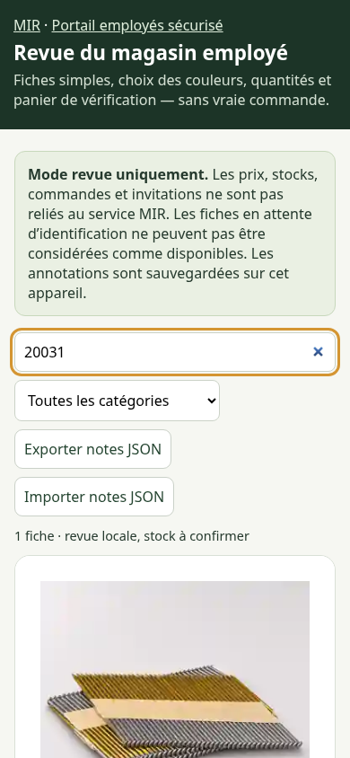
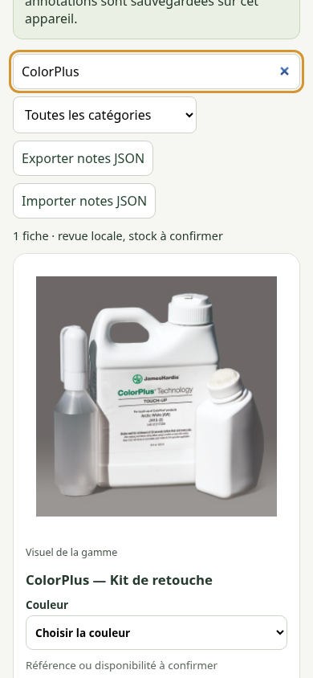
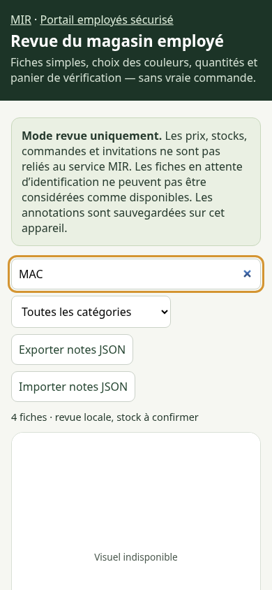